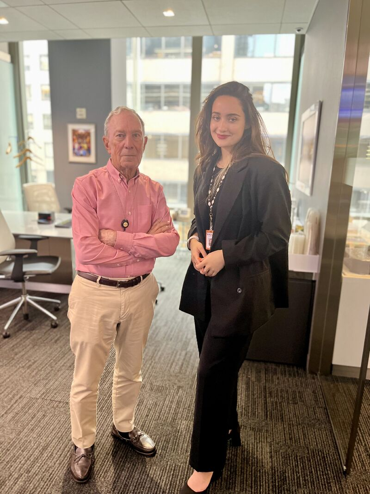

Intoduction
Hi there! My name is Madlin Dhimandi
I am currently a lower junior at CUNY Baruch College.
My major is pure Mathematics with a concentration in Computer Science.
I am also doing a minor in Philosophy, a study I am also passionate about.
Projects
Section will be updated when I work on projects for CTP.
Professional Expeience
My most recent Professional experience was with Bloomberg LP
at their office in Princeton, New Jearsy. In the Summer of 2023
I worked as a data analyst in the Global Data Departament.
Analyzed and visualized extensive client data utilizing Python, leading to improved client service communication and a permanent enhancement of the company team page, making it easier for reps to answer dividend related client queries quickly and accurately.
Utilized Python analysis to pinpoint trends, enabling the formulation of proposals for refining internal tool workflows. Subsequently, executed backend code enhancements, directly contributing to an impactful 33% surge in tool usage.
Enhanced functionality of internal team tool by editing backend code, effectively addressing, and resolving a targeted bug.
Conducted a comprehensive presentation to the entire data department, articulating findings, insights, and projected outcomes.
Bloomberg was a really fun experience that allowed me to
grow personally and professionaly. A key highlight was that I also got to meet the CEO
and former New York major: Mike Bloomberg 😊.

Relevant Skills
Technical Skills: Python, SQL, C++, HTML, CSS, Microsoft Excel, Microsoft Suite, Google Workspace, DCS.
Languages: Albanian (Native), Italian (Intermediate), Spanish (Beginner).